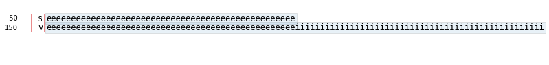

stemgraphic quickstart with categorical¶
Import stem_graphic from stemgraphic.alpha
[1]:
%matplotlib inline
import pandas as pd
from stemgraphic.alpha import stem_graphic
Load a data frame
[2]:
df = pd.read_csv('../datasets/iris.csv')
[3]:
df.describe(include='all')
[3]:
| sepal_length | sepal_width | petal_length | petal_width | species | |
|---|---|---|---|---|---|
| count | 150.000000 | 150.000000 | 150.000000 | 150.000000 | 150 |
| unique | NaN | NaN | NaN | NaN | 3 |
| top | NaN | NaN | NaN | NaN | setosa |
| freq | NaN | NaN | NaN | NaN | 50 |
| mean | 5.843333 | 3.054000 | 3.758667 | 1.198667 | NaN |
| std | 0.828066 | 0.433594 | 1.764420 | 0.763161 | NaN |
| min | 4.300000 | 2.000000 | 1.000000 | 0.100000 | NaN |
| 25% | 5.100000 | 2.800000 | 1.600000 | 0.300000 | NaN |
| 50% | 5.800000 | 3.000000 | 4.350000 | 1.300000 | NaN |
| 75% | 6.400000 | 3.300000 | 5.100000 | 1.800000 | NaN |
| max | 7.900000 | 4.400000 | 6.900000 | 2.500000 | NaN |
Select a column with text.
[4]:
stem_graphic(list(df['species'].values));

From this, we see we have 50 setosa, 50 versicolor and 50 virginica, but you probably already knew that!
[ ]: